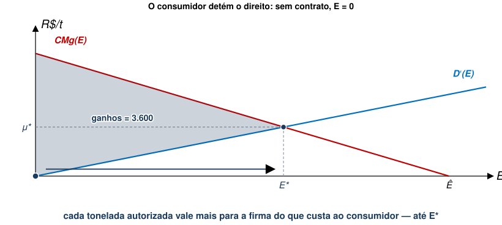
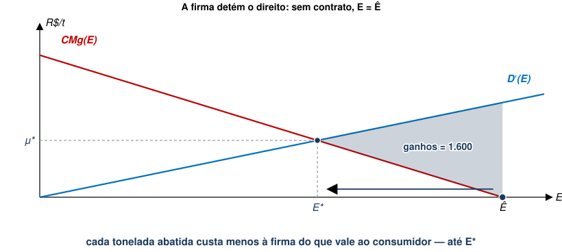

EAE1317 — Economia do Meio Ambiente e dos Recursos Naturais
2026-08-18
A aula passada terminou com uma pergunta em aberto: o modelo diz quanto cortar, mas não diz quem arca com o custo do abatimento.
(a) Quem polui, porque foi quem causou o dano.
(b) Quem sofre, se para ele o dano for menor que o custo de evitá-lo.
(c) Tanto faz: o nível de poluição acaba sendo o mesmo.
Referência: Phaneuf e Requate, cap. 3
A alocação eficiente fixa \(E^{*}\), o nível de emissão que minimiza
\[SC(E)=C\left(E\right)+D(E)\]
A ideia de Coase é que, atribuindo direitos de propriedade bem definidos aos agentes, é possível alcançar o ótimo de Pareto por meio de negociação
Firma pode propor um contrato para o consumidor.
Sem contrato, o direito é do consumidor: a firma não emite nada, e o consumidor sofre \(D(0)\). Aceitando, consumidor recebe \(\theta\) e passa a sofrer \(D(E)\).
\[y+\theta -D\left(E\right)\geq y-D(0)\]
que é o mesmo que
\[\theta \geq D\left(E\right)-D(0)\]
\[\theta ={D}\left(E\right)-D(0)\]
\[\min_{E}\ \left[C\left(E\right)-C\left(0\right)\right]-\theta -k \quad \text{s.a.} \quad \theta \geq D\left(E\right)-D(0)\]
Restrição vale como igualdade, logo, basta substituir \(\theta\):
\[\min_{E}\ \left[C\left(E\right)+D(E)\right] - \left[C\left(0\right)+D(0)\right]-k\]
O segundo colchete e o \(k\) não dependem de \(E\), então sobra
\[\min_{E}\ C\left(E\right)+D(E)\]
A condição de primeira ordem é a mesma da aula passada:
\[-{C}^{′}\left({E}^{*}\right)={D}^{′}\left({E}^{*}\right) \quad \Longleftrightarrow \quad CMg\left({E}^{*}\right)={D}^{′}\left({E}^{*}\right)\]
A firma só entra na negociação se esta compensar o que custa negociar:
\[\left[C\left(0\right)+D(0)\right]-\left[C\left({E}^{*}\right)+D({E}^{*})\right]\geq k\]

Com \(CMg\left(E\right)=60-0{,}3E\), \({D}^{′}\left(E\right)=0{,}2E\) e \(\hat{E}=200\), temos \({E}^{*}=120\) (valores em R$ mil):
| Sem contrato (\(E=0\)) | Com contrato (\(E=120\)) | |
|---|---|---|
| Custo de abatimento (firma) | 6.000 | 960 |
| Dano (consumidor) | 0 | 1.440 |
| Transferência \(\theta\) | — | 1.440 |
| Custo social | 6.000 | 2.400 |
De forma similar, consumidor propõe contrato para que firma reduza poluição em troca de pagamento.
Agora o status quo é \(\hat{E}\): a firma não gasta nada com abatimento, e \(C(\hat{E})=0\). Aceitando o contrato, passa a gastar \(C(E)\).
\[\theta \geq C\left(E\right)-C(\hat{E})\]
\[\min_{E}\ \left[D\left(E\right)-D\left(\hat{E}\right)\right]-\theta -k \quad \text{s.a.} \quad \theta \geq C\left(E\right)-C(\hat{E})\]
Substituindo \(\theta\), o problema do consumidor vira
\[\min_{E}\ C\left(E\right)+D(E) \qquad \text{com} \qquad \left[C\left(\hat{E}\right)+D(\hat{E})\right]-\left[C\left({E}^{*}\right)+D({E}^{*})\right]\geq k\]

| Sem contrato (\(E=200\)) | Com contrato (\(E=120\)) | |
|---|---|---|
| Custo de abatimento (firma) | 0 | 960 |
| Dano (consumidor) | 4.000 | 1.440 |
| Transferência \(\theta\) | — | 960 |
| Custo social | 4.000 | 2.400 |
Suponha que o agente A imponha uma externalidade ao agente B. Se os custos de transação forem suficientemente baixos, temos que, independentemente da alocação inicial de direitos de propriedade
Uma implicação importante deste teorema é que não importa a alocação inicial dos direitos de propriedade.
| Consumidor tem o direito | Firma tem o direito | |
|---|---|---|
| Sem contrato | \(E=0\) | \(E=\hat{E}\) |
| Quem propõe | a firma | o consumidor |
| Participação | \(\theta \geq D(E)-D(0)\) | \(\theta \geq C(E)-C(\hat{E})\) |
| Problema do proponente | \(\min C(E)+D(E)\) | \(\min C(E)+D(E)\) |
| Emissão contratada | \({E}^{*}\) | \({E}^{*}\) |
| Quem fica com o excedente | a firma | o consumidor |
| No caso | No modelo |
|---|---|
| Fazendeiros podiam adubar como quisessem | os fazendeiros detinham o direito |
| A Vittel procurou cada um deles | quem sofre o dano é quem propõe |
| Pagamento por hectare + €150 mil + assistência técnica | transferência \(\theta\) |
| Negociar com 37 fazendas, uma a uma | custo de transação \(k\) |
| Filtros e ação judicial fracassaram antes | alternativas ao contrato |
Quem deveria pagar a conta?
Se o direito é do consumidor, é a firma quem paga.
Se o direito é da firma, é o consumidor quem paga para ela abater.
De qualquer forma, poluição acaba no mesmo \({E}^{*}\) nos dois casos, com implicações distributivas distintas.
Quando \(k\) é grande demais, ou quando não se sabe de quem é o direito, resta a aplicar instrumentos regulatórios, dos quais trataremos na próxima aula.
EAE1317 — Economia do Meio Ambiente e dos Recursos Naturais